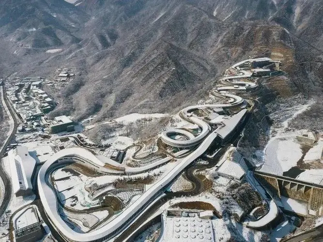
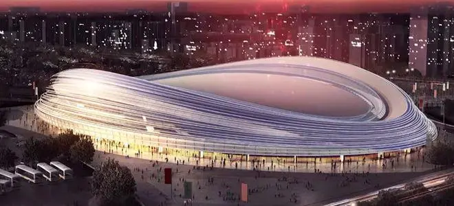

开幕式
2022年北京冬季奥运会开幕式于2022年2月4日在中华人民共和国国家体育场举行。中共中央总书记、中华人民共和国国家主席、中央军委主席习近平出席开幕式并宣布2022年北京冬季奥运会开幕。
2022年北京冬季奥运会开幕式以“构建人类命运共同体”为核心表达，以“简约、安全、精彩”为创作原则，立足于从全世界的角度展望美好未来。主要环节有：升中国国旗和奏唱中国国歌、运动员入场式、点燃主火炬等。
闭幕式
2022年北京冬季奥运会闭幕式以“构建人类命运共同体”为核心表达，以“简约、安全、精彩”为创作原则，立足于从全世界的角度展望美好未来。张艺谋担任2022年北京冬季奥运会闭幕式总导演。高亭宇和徐梦桃当选北京冬奥会闭幕式中国代表团旗手。
2022年2月20日晚，第二十四届冬季奥林匹克运动会闭幕式在国家体育场举行。中共中央总书记、国家主席、中央军委主席习近平出席闭幕式。
谷爱凌
谷爱凌（Gu Ailing Eileen），2003年9月3日出生于美国加利福尼亚州圣弗朗西斯科，昵称“青蛙公主”，中国女子自由式滑雪运动员，是国际雪联第一位自由式滑雪女子U型场地大满贯，也是中国首位在世界极限运动会夺金的运动员。
在2022年北京冬奥会中，谷爱凌获得自由式滑雪女子大跳台和自由式滑雪女子U型场地2枚金牌，1枚自由式滑雪坡面障碍技巧银牌的成绩。
苏翊鸣
苏翊鸣（Yiming Su），2004年2月18日出生于吉林省吉林市，中国单板滑雪运动员。
2022年，苏翊鸣在北京冬奥会上夺得单板滑雪男子坡面障碍技巧银牌以及大跳台金牌，成为中国首个单板滑雪冬奥冠军。
徐梦桃
徐梦桃，1990年7月12日出生于辽宁省鞍山市，中国自由式滑雪空中技巧女队队员。
2022年2月10日，获2022年北京冬奥会自由式滑雪空中技巧混合团体项目银牌。2月14日晚，获得2022年北京冬奥会自由式滑雪女子空中技巧金牌。2月20日，当选北京冬奥会闭幕式中国代表团旗手。
任子威
任子威，1997年6月3日出生于黑龙江省哈尔滨市，中国短道速滑运动员。
2022年2月7日，任子威以1分26秒768获得北京冬奥会短道速滑男子1000米冠军，实现了中国队在该项目上冬奥金牌零的突破。
高亭宇
高亭宇，1997年12月15日出生于黑龙江省伊春市南岔县，中国速度滑冰运动员。
2022年，高亭宇担任北京冬季奥运会中国体育代表团旗手，个人还在北京冬奥会速度滑冰男子500米上滑出34秒32，打破奥运纪录的同时也赢得中国历史上首枚冬奥会男子速度滑冰金牌。
隋文静&韩聪
隋文静（Sui Wenjing），1995年7月18日出生于中国黑龙江省哈尔滨市，中国花样滑冰双人滑女运动员。
韩聪（Han Cong），1992年8月6日出生于中国黑龙江省哈尔滨市，中国花样滑冰双人滑男运动员。
2022年2月19日，韩聪、隋文静获得北京冬奥会花样滑冰自由滑金牌。
齐广璞
齐广璞，1990年10月20日出生于江苏省徐州市沛县，中国自由式滑雪空中技巧运动员，效力中国自由式滑雪空中技巧国家队。
2022年2月16日，获得2022年北京冬奥会自由式滑雪男子空中技巧金牌。
李文龙
李文龙，男，2001年2月4日出生于辽宁省抚顺市，中国短道速滑队、青岛短道速滑队运动员。
2022年2月7日，在2022年北京冬季奥运会短道速滑男子1000米决赛中以1:29.917的成绩获得银牌。
闫文港
闫文港，男， 1997年7月1日出生于天津，中国钢架雪车运动员。
2022年2月11日，在北京冬奥会男子钢架雪车比赛上，闫文港以四轮4分01秒77的成绩摘得铜牌，这是中国选手在冬奥会历史上获得的首枚钢架雪车奖牌。
羽生结弦
羽生结弦，1994年12月7日出生于日本宫城县仙台市，日本花样滑冰男子单人滑运动员。
2022年2月8日，在2022年北京冬季奥运会花样滑冰男子单人滑短节目比赛中，最终获得95.15分，以第八名的成绩晋级决赛；2月10日，在2022年北京冬奥会花样滑冰男子单人滑比赛中，羽生结弦未能在正式比赛中呈现完整的阿克塞尔四周（4A）跳跃，以总分283.21分获得第四名。
冰墩墩&雪容融
冰墩墩（Bing Dwen Dwen），是2022年北京冬季奥运会的吉祥物。冰墩墩将熊猫形象与富有超能量的冰晶外壳相结合，头部外壳造型取自冰雪运动头盔，装饰彩色光环，整体形象酷似航天员。
雪容融（Shuey Rhon Rhon），是2022年北京冬季残奥会的吉祥物，其以灯笼为原型进行设计创作，主色调为红色，头顶有如意环与外围的剪纸图案，面部带有不规则形状的雪块，身体可以向外散发光芒。
首钢滑雪大跳台
首钢滑雪大跳台（Big Air Shougang），别名“雪飞天”，位于北京市石景山区首钢老工业园区北区，是北京2022年冬奥会自由式滑雪和单板滑雪比赛的场地；由赛道、裁判塔和看台区域三部分组成，共设置坐席6700个。
冰立方
国家游泳中心（National Aquatics center），别名“水立方”、“冰立方”，位于北京市朝阳区北京奥林匹克公园内（北京市朝阳区天辰东路11号），始建于2003年12月24日，于2008年1月正式竣工，2020年11月27日，国家游泳中心冬奥会冰壶场馆改造工程通过完工验收，“水立方”变身为“冰立方”。国家游泳中心是2008年北京奥运会的精品场馆和2022年北京冬奥会的经典改造场馆，也是唯一一座由港澳台同胞、海外华侨华人捐资建设的奥运场馆。

国家雪车雪橇中心
国家雪车雪橇中心（National Sliding Centre），别名“雪游龙”，位于北京市延庆区西大庄科村，是北京2022年冬奥会雪车、雪橇的比赛场地。
国家雪车雪橇中心用地面积18.69公顷，建筑面积5.25万平方米，构筑物面积2.15万平方米，场内设施主要包括出发区、运营区、结束区和赛道等。国家雪车雪橇中心以支撑赛道并容纳制冷主管的U型槽为基础，以赛道为核心，通过相同的坡屋面将分散布置的出发区、结束区等建筑串联在一起。赛道全长1975米，赛道为长线型空间双曲面板壳结构，共由16个角度、倾斜度都不同的弯道组成，其中第11个弯道为全球独具特色的360度回旋弯道。
国家雪车雪橇中心是中国国内第一条、也是唯一一条符合冬奥会标准的雪车雪橇赛道。
